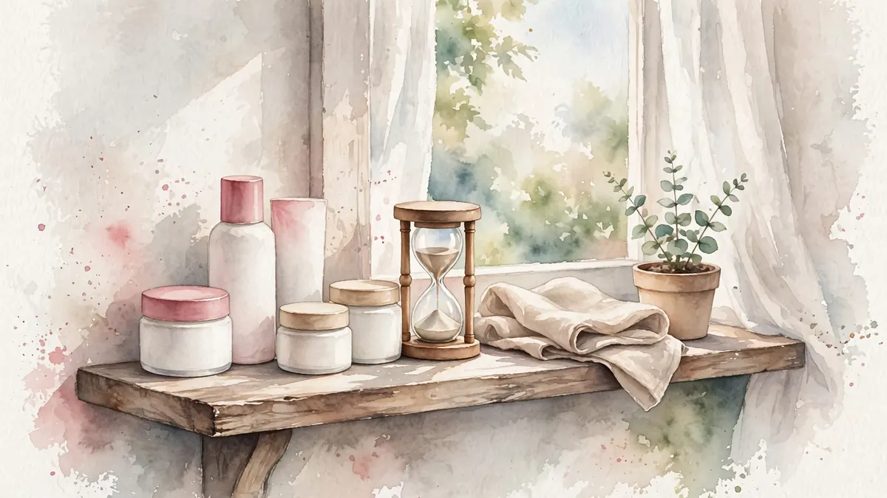

トップ ＞ スキンケア ＞ 開封後の使用期限の目安と保管場所
開封後の使用期限の目安と保管場所

「この美容液、いつ開けたものだったか分からない」。洗面所の棚を見て、そう思った経験はないでしょうか。施術の現場では、開封した日付の管理は基本中の基本です。この記事では、開封後の使用期限の考え方と、保管場所の選び方を整理します。
使用期限の表示と「開封後」の考え方
化粧品には、使用期限が表示されているものと、未開封で適切に保管した場合に品質が保たれる前提で、表示が省略されているものがあります。いずれの場合も、「開封したら早めに使い切る」のが基本です。開封後は空気や手に触れる機会が増えるため、未開封のときと同じようには考えられません。
容器には、開封後の使用期間の目安を示すマーク（開いたジャーの絵に「6M」「12M」などの表記）が印刷されていることがあります。これは開封後6か月、12か月を目安にする、という意味の表示です。棚のアイテムを一度眺めて、このマークを探してみてください。
開封日を書いておく、小さな工夫
目安を管理する一番簡単な方法は、開封日を容器に書いておくことです。油性ペンで底面に日付を書く、マスキングテープに書いて貼る、スマートフォンのメモに残す。方法は何でも構いません。施術の現場でも、開封日の記録は徹底しています。
記録があると、「そろそろ使い切りたいもの」から使う、という棚の回し方ができるようになります。買い置きが多い方ほど、この小さな習慣の効果を感じられると思います。
置き場所は「温度と光」で選ぶ
保管場所の基本は、直射日光が当たらず、温度変化の少ない場所です。窓際は光と温度の両方で条件が厳しくなります。洗面所は便利な反面、入浴後の湿気と温度の変化が大きい場所でもあります。湿気が気になる場合は、脱衣所の引き出しなど、一段階落ち着いた場所に置くのも選択肢です。
使い始めてから、色やにおい、質感に明らかな変化を感じた場合は、使用をやめるのが無難です。もったいない気持ちは分かりますが、肌に直接つけるものだからこそ、変化に気づいたら切り替える判断が大切です。
家族とアイテムを共有している場合は、開封日の管理がさらに大切になります。使う人が多い分、減りも早く、手に触れる機会も増えるからです。共有のものは置き場所を決め、開封日を書いたテープを目立つ位置に貼るなど、家族の誰が見ても分かる形にしておくと管理が続きます。逆に、肌に合うかどうかを試している最中のものは、個人用として分けておく方が、変化に気づきやすくなります。
セラフィナ「開封した日を書いておくだけで、使い切る目安がぐっと分かりやすくなるよ」